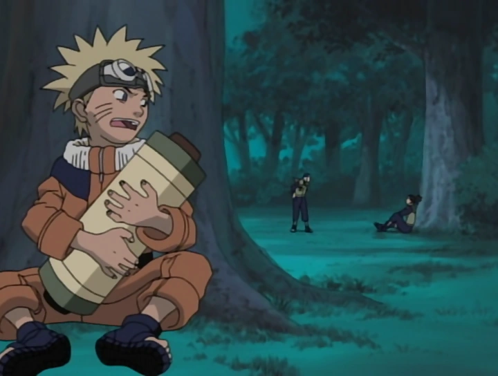
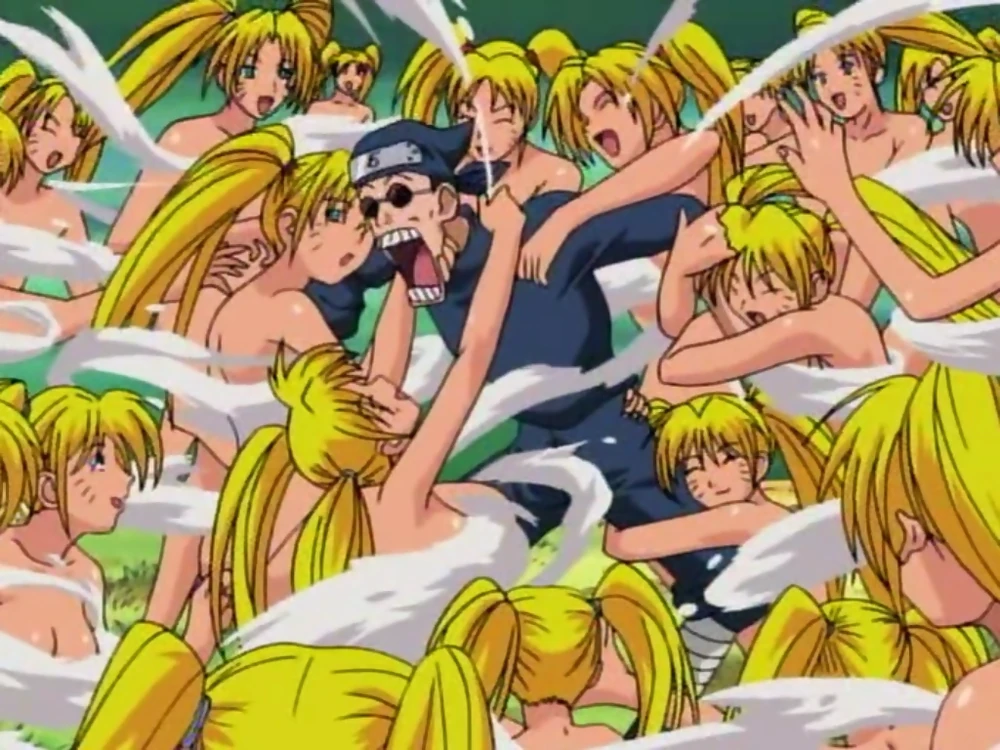
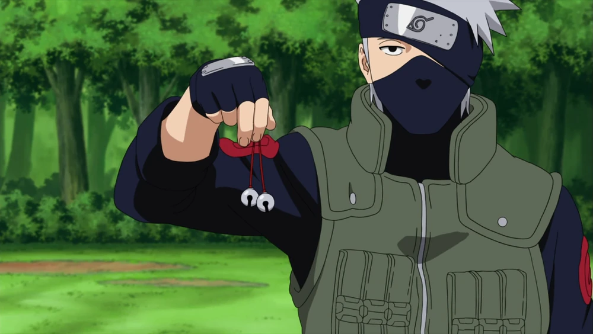
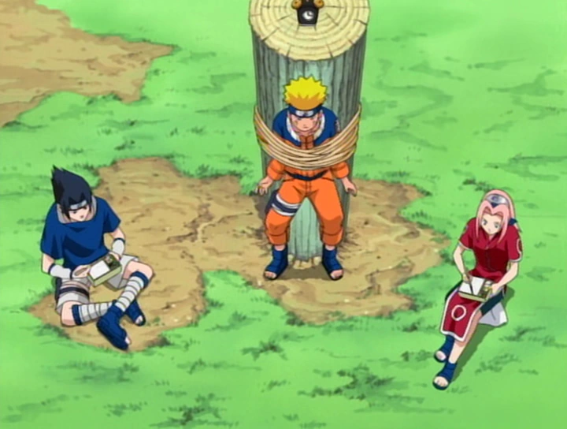

Prologue
Twelve years ago, there was once an evil monster known as the Nine-Tailed Demon Fox. One night, it attacked the village of Konoha and killed many innocent people that night. None of the ninja of Konoha could stop it, so the village leader, the Fourth Hokage, cast a jutsu on the Nine-Tails that sealed it in a newborn boy and cost the Fourth Hokage's life. Twelve years after the Nine-Tail's attack, at the Ninja Academy, Naruto Uzumaki's reputation as a delinquent and a troublemaker had earned him infamy among the teachers and students. Iruka Umino, and to a lesser extent the Third Hokage, were the only two positive influences on him. Despite this, Naruto continued to fail the graduation exam, which required students to demonstrate how much they had learned by performing the Clone Technique. While Naruto was decently skilled in most of the basic techniques taught at the Academy, for some reason he has never been able to perform this one correctly, causing him to fail the final exam for graduation. Mizuki, another Academy examiner, used Naruto's depression after his most recent failure to trick Naruto into stealing the Scroll of Seals, a collection of forbidden techniques housed within the Hokage's study that could be dangerous in the wrong hands, claiming that Naruto would be automatically passed by simply learning a technique from the scroll and preforming it successfully. Not one to pass up such an opportunity, Naruto immediately did so, using his Sexy Technique to distract the Third Hokage long enough to escape with the scroll. Once he had fled to the neighbouring woods, Naruto began his efforts in learning a technique from the scroll, the first of which happened to be the Multiple Shadow Clone Technique, something he wasn't happy about, given his former failures at the ordinary Clone Technique. As search parties were sent out to find Naruto and retrieve the scroll, Iruka got to him first, and found him to have been training the entire time. Ignorant of what he had done, Naruto simply repeated to Iruka what Mizuki had told him earlier, causing Iruka to realise that Mizuki was trying to use Naruto to help him steal the scroll and later steal for himself. Just as Iruka realised this, Mizuki showed up to attack them both. After he injured Iruka, who had pushed Naruto out of the way of an attack, Mizuki tried to get Naruto to give him the scroll while Iruka tried to convince Naruto to keep it. Their argument led Mizuki to tell Naruto the truth everyone had been keeping from him: that he was the container of the Nine-Tailed Demon Fox. Startled, Naruto ran off, leaving Iruka and Mizuki to fight each other. Naruto watched from a distance, eventually learning what Mizuki was after, as well as the true level of Iruka's devotion to Naruto. Just before Mizuki could kill Iruka, Naruto attacked Mizuki, threatening to kill him should he ever touch his sensei again. Confident in his superiority, Mizuki claimed he could beat Naruto with one attack, only for the exact opposite to happen: using his newly learned Multiple Shadow Clone Technique, Naruto beat Mizuki to a bloody pulp. Impressed that Naruto could master such a difficult technique, Iruka let Naruto graduate, ironically fulfilling Mizuki's original promise. Upon graduating, Naruto was required to have his picture taken for identification purposes. Rather than having a standard picture, Naruto decided to paint his face and point at the camera in a menacing way. When the Third Hokage learned of this, he told Naruto to retake the picture. To express his disagreement on this matter, Naruto used his Sexy Technique in an attempt to convince the Third otherwise. Meanwhile, a young boy was watching the discussion, and used the opportunity to attempt an attack upon the Hokage, only to fall flat upon his face. His sensei, Ebisu, pursued the boy into the room and caught a glimpse of Naruto, whom he recognised as the container of the demon fox. The boy accused Naruto of setting a trap for him, and Naruto responded by grabbing hold of the boy. Ebisu ordered Naruto to let the boy go, informing Naruto that the boy is none other than the Third Hokage's grandson. The boy, certain that Naruto, fearing the Hokage's wrath, will do no harm to him, taunted Naruto, who whacked the boy in the head due to his lack of fear towards the boy's relatives. Ebisu ran to the boy's side, informing him that, if he wanted to be Hokage someday, he should avoid people like Naruto. Later on, Naruto found the boy to be following him and at the same time doing a bad job at disguising himself. The boy, his cover blown, introduced himself as Konohamaru, and expressed his desire to be taught the Sexy Technique due to its prior success at "defeating" the Third Hokage, in the hopes that using it will make him Hokage. Naruto agreed, and took Konohamaru on as his disciple. To learn the technique, Naruto tried to improve Konohamaru's Transformation Technique by showing him naked women via pornographic magazines and taking him to women's bathhouses. Eventually they arrived in the woods for refinement of the technique, where Konohamaru explained that the people of the village didn't recognise him by his name, and instead referred to him as the Hokage's grandson, which he grew tired of. Because of this, he hoped to become Hokage himself so that people would finally recognise him properly. Soon after, Ebisu arrived to take Konohamaru home, lecturing him all the while. At that moment Konohamaru performed a perfect Sexy Technique, which only caused Ebisu to lecture Konohamaru further, since he is not weak to such derogrative techniques. Perplexed by the technique's apparent failure, Naruto used his Harem Technique, which succeeded in putting Ebisu out of commission. Konohamaru questioned why he was unable to defeat Ebisu by himself, and Naruto replied that becoming Hokage required a great deal of work for which there were no short-cuts. Konohamaru denounced their student-teacher relationship on the grounds that they are both rivals for the title of Hokage. Naruto made the observation that, since he was an actual ninja, he would always be one step ahead of Konohamaru, but that he would look forward to the day that they met in battle. In order to officially obtain the rank of genin, Academy students must be organised into groups of three to undergo a field evaluation administered by a jōnin, who would be their squad leader should they pass. On the day of organisation, Naruto made sure to have a good breakfast, and headed off to the academy, where the groups were to be decided. Upon arriving there, Naruto showed off his forehead protector to the other students, who thought he had failed. To Naruto's delight, Sakura Haruno started to approach him; however, his glee was quickly stifled when Sakura pushed him out of the way so that she might sit next to Sasuke Uchiha, which would anger all of the girls in the room. Naruto, jealous of Sakura's affection for Sasuke, leaped upon the desk at which they were sitting so that he could look Sasuke in the eye. To the disgust of Naruto, Sasuke, and every girl in the room, Naruto was bumped by another student and accidentally kissed Sasuke, earning him a beating from Sakura. As Naruto recovered, Iruka arrived to announce the three-man teams, and as he started listing the members of Team 7, Naruto was pleased and Sakura was saddened to learn that the two will be on the same team. As the third member was revealed, Sakura was pleased and Naruto was saddened to learn that Sasuke was that member, who happened to dislike being teamed with the both of them. As Iruka announced the remaining teams, Hinata Hyūga, Kiba Inuzuka, and Shino Aburame were revealed to compose Team 8, and Shikamaru Nara, Chōji Akimichi, and Ino Yamanaka were revealed to compose Team 10. Later, Sakura went off to look for Sasuke, ignoring Naruto, who wanted to have lunch with her. Angered that Sakura had yet again picked Sasuke over himself, Naruto formulated a plan to be with Sakura. Upon finding Sasuke alone in a room, Naruto leaped inside, where an unseen fight ensued. As things settled down, Sasuke was shown to be the only one leaving. Later on, Sasuke approached Sakura, who expresses her feelings for him and her distaste for Naruto. As the two were about to kiss, Sasuke, who was revealed to be a transformed Naruto, suffered a violent stomachache and ran off to the nearest bathroom. While Naruto dealt with his mysterious case of diarrhoea, the real Sasuke approached Sakura. When she expressed her jealousy of Naruto for having no parents to tell him what to do, Sasuke stated that those without parents grow up lonely, and that Sakura made him sick. Sasuke left the crushed Sakura by herself, and she began to consider treating Naruto better. As Naruto finally exited the bathroom he ran into Sasuke, and it seemed as though revenge on Sasuke's part was imminent. Elsewhere, the Third Hokage took Kakashi Hatake, Team 7's reluctant jōnin leader, on a tour of Naruto's home, and the latter noted that the milk Naruto seemed to have had for breakfast was expired, causing him to frequently head for the bathroom. Soon afterwards, the members of Team 7, after a long wait, finally met their jōnin-sensei, who used the meeting as an opportunity for them to get to know one another. Kakashi went first, and said he didn't feel like telling them anything about himself. Naruto proclaimed that he wanted to become Hokage one day, and that he loved ramen. Sakura implied that she loves Sasuke and stated that she hated Naruto. Lastly, Sasuke asserted that he hated a lot of things, didn't like anything, and that he would someday kill a certain man that wronged him long ago. Kakashi ended the meeting by telling the others to be at the training grounds the next day with their ninja gear, and advised them not to have breakfast. The next day, Kakashi arrived at the training grounds last, four hours later than planned. Kakashi then explained how the evaluation would work: it would be a survival battle, in which the aim was for each of the prospective students to take one of two bells from Kakashi. Anyone who didn't get a bell before noon would receive no lunch, which, as the others realised, was why he'd told them not to have breakfast. He then explained that, because there were only two bells, at least one person would fail and return to the Academy. He did, however, allow the others to use shuriken if they would like, and informed them that they would fail if they attempted the mission with anything less than the intent to kill him. Naruto laughed at this suggestion, saying that Kakashi had no talent. Kakashi rebutted this, stating that class clowns were often the weakest link and that they didn't normally pose a threat, causing Naruto to attack Kakashi before the test had officially begun. Kakashi easily countered the attack and noted that he was starting to like the team, due to Naruto's attack having the intent to kill. He then sent off Team 7 to begin the test. As the test got underway, Sasuke and Sakura applied stealth methods, staying hidden from Kakashi. Naruto, however, decided that attacking Kakashi would work just as well, and called him out. As Naruto charged at Kakashi, the latter pulled out a book, "Make Out Paradise", causing Naruto to hesitate slightly, though Kakashi assured him that the book wouldn't prevent him from defending against Naruto. Naruto began a series of attacks, each of which was dodged by Kakashi. Eventually, Kakashi ended up behind Naruto, and used his One Thousand Years of Death to send Naruto into the nearby lake. Naruto recovered and attacked Kakashi with a number of shadow clones, whose quantity impressed Sasuke and Sakura. Kakashi evaded all of the clones' attacks with Body Replacement Technique, leaving them to fight amongst themselves believing one of them is Kakashi. Upon realising this, Naruto dismissed his clones, and then noticed a bell lying under a nearby tree. When he went to pick it up, however, he was trapped in a snare set by Kakashi, leaving the young ninja dangling upside-down. Kakashi retrieved the bell and lectured Naruto about falling for obvious traps. At that moment, Sasuke, believing Kakashi to be distracted, attacked Kakashi with a barrage of shuriken and kunai, apparently killing Kakashi. This, too, was revealed to be a trap, as the attacked Kakashi turned into a log, the result of another Body Replacement Technique. Sasuke, his location revealed, went off to find a new hiding spot, while Sakura went looking for Sasuke. As she searched for him, she was tricked by Kakashi's genjutsu, Demonic Illusion: Hell Viewing Technique, and, as she recovered, Sasuke fell prey to Kakashi's Earth Release: Double Suicide Decapitation Technique. Naruto, using Kakashi's absence to his advantage, released himself from the snare and attempted to eat the lunches that Kakashi had left behind; however, Kakashi caught him in the act and tied Naruto to a wooden post. Noon eventually rolled around, and all three students had failed to get a bell. After their failure, Kakashi berated all three for their lack of teamwork. He explained to them that the purpose of the exam was to work together, and not to act independently as they all had done. He said that he would give them all a second chance after lunch, and allowed Sakura and Sasuke to eat; however, he ordered that Naruto, because of his attempt to eat all of the food himself, should be barred from eating at all, and that anyone who gave him food would fail automatically. After he left, Sakura and Sasuke realised that they'd need Naruto in top shape if they were to retrieve the bells, and decided to defy Kakashi by feeding him. Kakashi, who had been watching, appeared before the genin in a puff of smoke, a furious look upon his face. At this moment, the Third Hokage elsewhere revealed to Iruka that Kakashi had never passed a team of Academy students, and that, although the failure percentage was astounding, the reasons behind it were perfectly just. Back at the training grounds, Naruto, Sakura, and Sasuke claimed that they were a team, and that, therefore, if one of them failed, then they all failed. Quickly changing his attitude, Kakashi informed them that they had passed, reciting the exact message he was trying to get across as his reason: "In the ninja world, those who don't follow the rules are scum, but those who abandon their friends are worse than scum".
Graduation
Konohamaru
Formation of Team 7
Evaluation
Assignment
 While Genin were normally assigned D-rank missions, Naruto insisted on doing something more exciting, and the Third Hokage agreed to send them on a C-rank mission to escort Tazuna, a master bridge-builder, back to the Land of Waves. During their mission, the team was attacked by two chūnin, enemies at a level that wasn't supposed to be encountered on a C-rank mission. Naruto, surprised by the chūnins' appearances, panicked and was struck by one of the chūnin's poisonous metal gauntlets. Sasuke, in Naruto's absence, dealt with the attackers quite efficiently, and rubbed it in by one-upping of Naruto by calling him a "scaredy-cat". Once the attackers had been restrained, Naruto bled out the poison he had received by stabbing his wound with a kunai, swearing upon the pain in his hand never to freeze up and leave his friends to fend for themselves ever again.
While Genin were normally assigned D-rank missions, Naruto insisted on doing something more exciting, and the Third Hokage agreed to send them on a C-rank mission to escort Tazuna, a master bridge-builder, back to the Land of Waves. During their mission, the team was attacked by two chūnin, enemies at a level that wasn't supposed to be encountered on a C-rank mission. Naruto, surprised by the chūnins' appearances, panicked and was struck by one of the chūnin's poisonous metal gauntlets. Sasuke, in Naruto's absence, dealt with the attackers quite efficiently, and rubbed it in by one-upping of Naruto by calling him a "scaredy-cat". Once the attackers had been restrained, Naruto bled out the poison he had received by stabbing his wound with a kunai, swearing upon the pain in his hand never to freeze up and leave his friends to fend for themselves ever again.